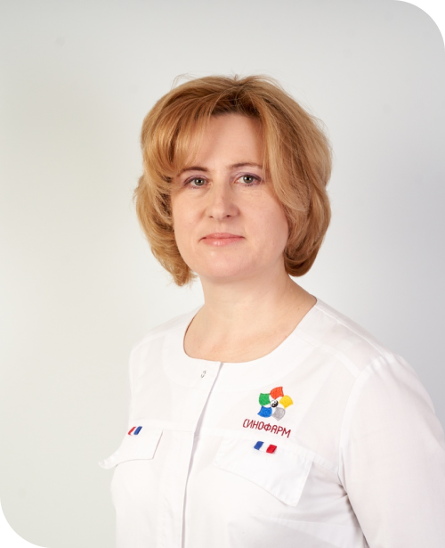

Боровикова Лада Викторовна
Врач рефлексотерапевт, оториноларинголог, врач по традиционной китайской медицине.
Специализируется на лечении заболеваний ЛОР-органов с помощью фитопрепаратов
традиционной китайской медицины, гомеопатии, краниосакральной терапии. Жизненная
позиция: лечить пациента, а не его болезнь, помогать людям восстанавливать здоровье
(физическое и психоэмоциональное), научить пациента нелекарственным методам
профилактики заболеваний. Активно занимается преподавательской деятельностью. Проводит
семинары по различным направлениям традиционной китайской медицины. Постоянно повышает
свой профессиональный уровень, участвует в международных конгрессах и выставках.
